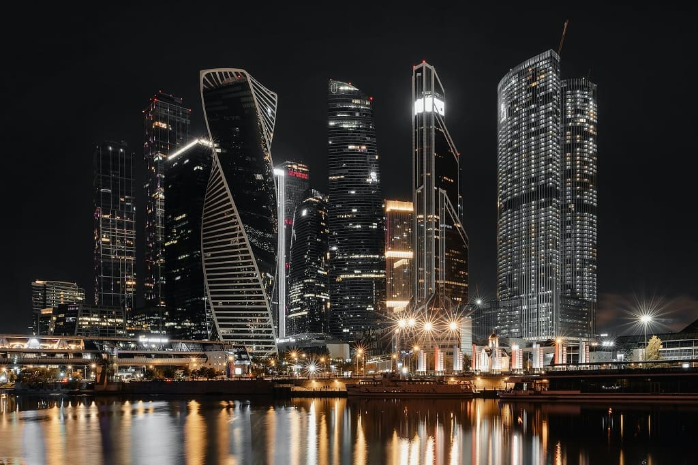
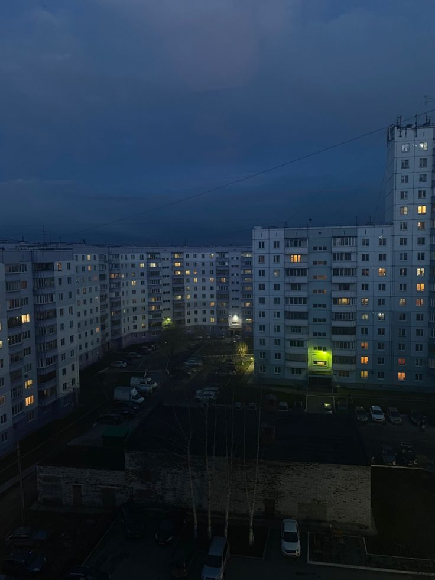

Мир без смысла
Мир вокруг нас молчит. Он не шепчет нам тайн, не раскрывает своих законов с легкостью, не заботится о том, чтобы мы его поняли. Камни остаются камнями, реки текут, не думая о своем течении, звезды горят, не зная, что их свет когда-то назовут прекрасным. Всё просто есть — без цели, без оправдания, без истории.
И вот ...
Среди этого безмолвия появляемся мы — существа, которые не могут жить без смысла. Мы смотрим на хаос и рисуем в нем узоры, называем случайные скопления звезд созвездиями, превращаем голые факты в истины, а бессмысленные страдания — в уроки. Мы создаем мифы, религии, науки, философии — не потому, что они есть в мире, а потому, что без них нам нельзя.
Но в этом нет обмана. Напротив — в этом наша сила. Мы не находим смысл, мы делаем его. Каждый взгляд, полный ненависти или любви, каждое решение, трусливое или смелое, каждое слово, лживое или искреннее — всё это кирпичи в здании мира, который имеет значение только для нас.

И пусть вселенная равнодушна. Пусть ничто изначально не важно. Но раз уж мы здесь — давайте создавать смыслы так, чтобы они жгли. Чтобы наше краткое присутствие в этом молчаливом мире оставило после себя не просто пепел, а огонь.
